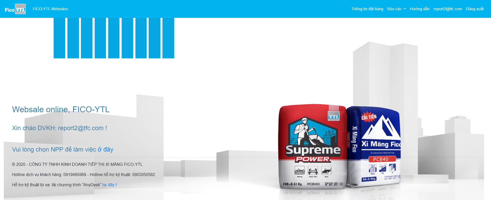
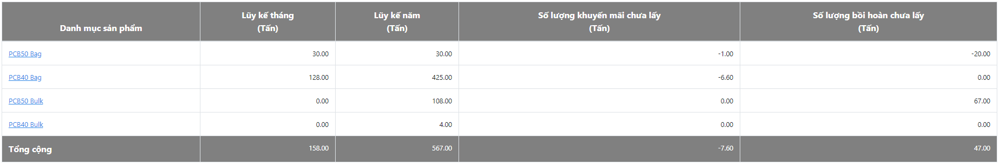
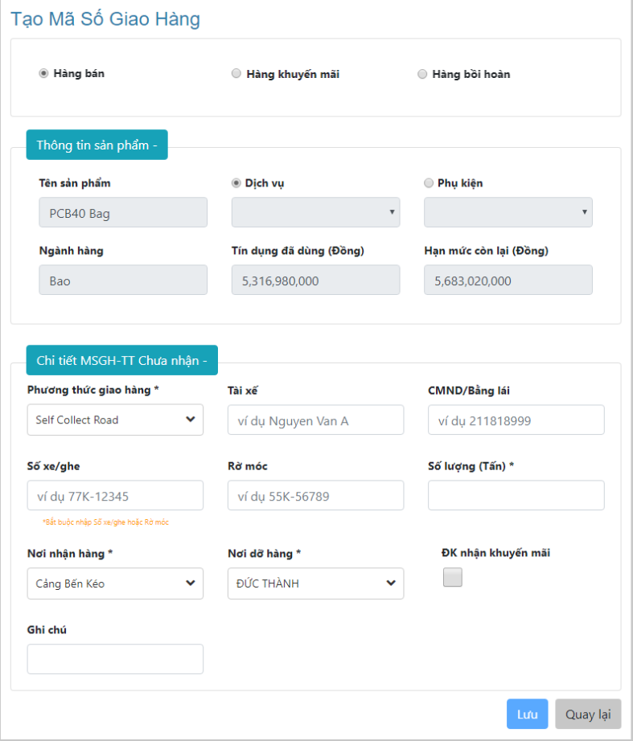
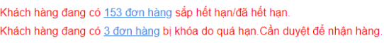
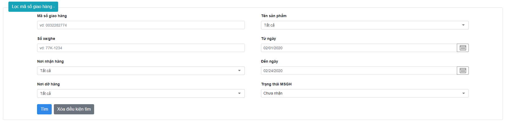
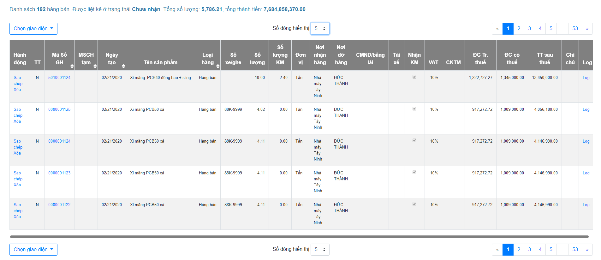
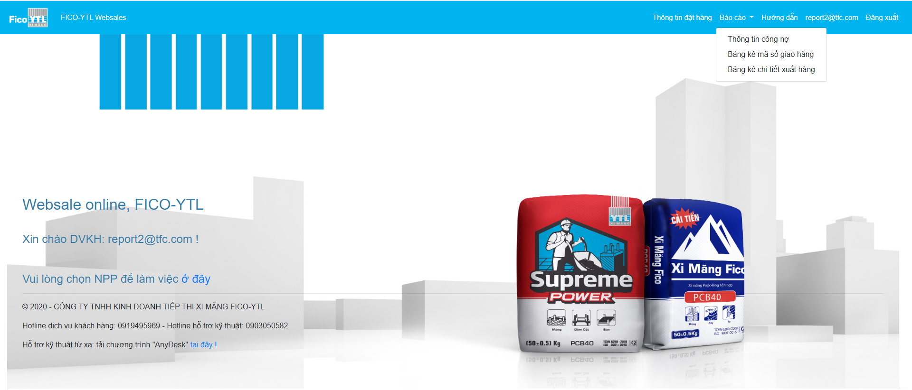
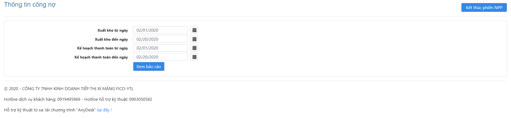
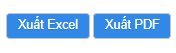
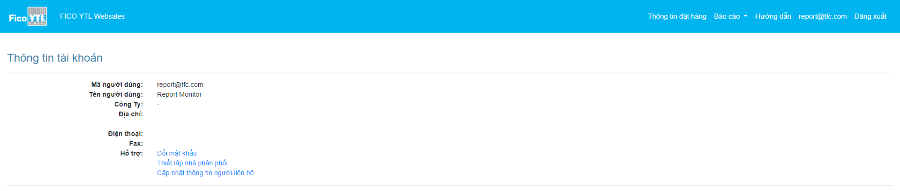

HƯỚNG DẪN SỬ DỤNG HỆ THỐNG BÁN HÀNG TRỰC TUYẾN FICO-YTL (WEBSALE)
PHẦN HƯỚNG DẪN:
Cách thức hoạt động:
- Sử dụng trên thiết bị di động: dùng trình duyệt, Chrome hay Safari.
- Sử dụng trên máy tính: dùng Firefox, Chrome hay Internet Explorer.
Truy cập:
- Vào trình duyệt gõ địa chỉ: https://sale.fico-ytl.com và bấm enter
- Bạn sẽ vào được màn hình đăng nhập của hệ thống Websale như bên dưới:
Màn hình đăng nhập từ máy tính: gõ tài khoản tương ứng của DVKH hoặc NPP
- Khi bạn đăng nhập vào với tài khoản của DVKH, bạn phải chọn một trong những NPP để làm việc.
- Khi bạn đăng nhập vào với tài khoản của NPP, tên của bạn sẽ được hiển thị bên dưới.
Xem đơn hàng và tạo mã số giao hàng:
- Từ thanh menu, bạn chọn vào: “Thông tin đặt hàng”, bạn sẽ có danh sách các sản phẩm:
- Từ danh sách tên sản phẩm, bạn chọn 1 trong những tên sản phẩm để tạo MSGH.
- Màn hình tạo MSGH được hiển thị như sau:
- Nhập các thông tin cần thiết, cần cho việc tạo một MSGH.
- Các ô có dấu (*) là điều kiện bắt buộc bạn phải nhập thông tin vào đầy đủ và chính xác.
- Các lưu ý: Bạn hãy xem, bạn đang tạo MSGH trên đơn hàng nào? SP nào? Nhận tại đâu ? Đặt hàng bao nhiêu? v.v…
- Sau khi đã nhập thông tin xong, hãy nhấn nút “Lưu” để hoàn tất.
- Nếu muốn hủy bỏ MSGH này, hãy nhấn nút “Quay lại”
Tìm và hiệu chỉnh các MSGH:
- Từ thanh menu, bạn chọn vào “Thông tin đặt hàng” để liệt kê một hoặc nhiều MSGH theo tiêu chí tìm kiếm của bạn.
- Bạn có thể tìm thông tin đơn hàng sắp hết hạn/đã hết và đơn hàng bị khóa do quá hạn, cần duyệt để nhận hàng bằng cách kích vào link tương ứng ở đầu trang
- Bạn có thể tìm theo “Mã số giao hàng”, vd: gõ vào: “2899”, v.v
- Bạn có thể tìm theo “Số xe/ghe”, “Nơi nhận hàng”, “Nơi dỡ hàng”, “Tên sản phẩm”, “Từ ngày”, “Đến ngày”, “Trạng thái MSGH”, hệ thống sẽ liệt kê tất cả các MSGH, có đầy đủ các tiêu chí tìm kiếm bên trên.
- Khi muốn tìm lại với tiêu chi mới, hãy nhấn nút “Xóa điều kiện tìm kiếm”, để bắt đầu việc tìm kiếm với tiêu chí mới !
- Sau khi tìm kiếm thành công sẽ hiển thị ra danh sách MSGH

- Bạn có thể Copy MSGH bằng cách nhấn vào nút: “Sao chép”.
- Bạn có thể hiệu chỉnh MSGH bằng cách chọn vào MSGH tương ứng
- Bạn có thể xóa đơn hàng đang được liệt kê trong danh sách các mã số giao hàng bằng cách nhấn vào nút : “Xóa”.
Xem các báo cáo:
- Từ thanh menu “Xem báo cáo”:
- Menu xem báo cáo được hiển thị như sau:
- Chọn xem báo cáo: “Thông tin hóa đơn và công nợ”:
- Chọn ngày tháng, từ ngày … đến ngày theo định dạng ngày tháng
- Nhấn nút “Xem báo cáo” để hiện thị thông tin muốn xem
- Sau khi thực hiện xem báo cáo người dùng có thể xuất ra định dạng excel hoặc pdf.
- Menu xem báo cáo: “Bảng kê mã số giao hàng”:
- Chọn ngày tháng, từ ngày … tới ngày theo định dạng ngày tháng
- Chọn các thông tin muốn lọc: “Nơi nhận hàng”, “Nơi dỡ hàng”, “Sản phẩm”, “Thị trường tiêu thụ”, “PTGH”, “Tình trạng nhận hàng”, "Loại hàng"
- Nhấn nút “Xem báo cáo” để hiện thị thông tin muốn xem
- Sau khi thực hiện xem báo cáo người dùng có thể xuất ra định dạng excel hoặc pdf.
- Menu xem báo cáo: “Bảng kê chi tiết xuất hàng”:
- Chọn ngày tháng, từ ngày … tới ngày theo định dạng ngày tháng
- Chọn các thông tin muốn lọc: “Nơi nhận hàng”, “Thị trường tiêu thụ”, “Sản phẩm”, “PTGH”, “Số ghe/xe”, "Loại hàng", "Nơi dỡ hàng".
- Nhấn nút “Xem báo cáo” để hiện thị thông tin muốn xem

- Sau khi thực hiện xem báo cáo người dùng có thể xuất ra định dạng excel hoặc pdf.
Xem thông tin người dùng và lựa chọn NPP để làm việc:
- Từ thanh menu: kích vào tên “%tài khoản người dùng%”:
- Màn hình thông tin tài khoản hiển thị như sau:
- Chọn vào “Đổi mật khẩu”: để thay đổi mật khẩu của người dùng hiện tại.
- Chọn vào “Thiết lập nhà phân phối”: Chức năng này chỉ dành cho DVKH. Dùng để chuyển đổi lựa chọn làm việc cho NPP nào hiện tại.
- Chọn vào “Cập nhật thông tin người liên hệ”: Để người dùng có thể tự bổ sung những thông tin còn thiếu, và chưa rõ ràng trong các thông tin liên hệ giữa NPP và Website.
Cách “Đăng xuất” khỏi hệ thống:
- Từ thanh menu: Giúp người dùng thoát khỏi phiên làm việc hiện tại trên Website để đảm bảo tính bảo mật và an toàn số liệu. Khi làm việc trở lại, người dùng phải đăng nhập lại.